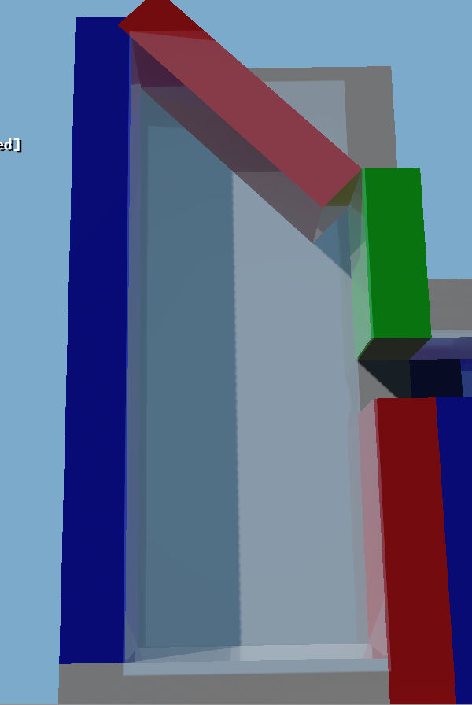
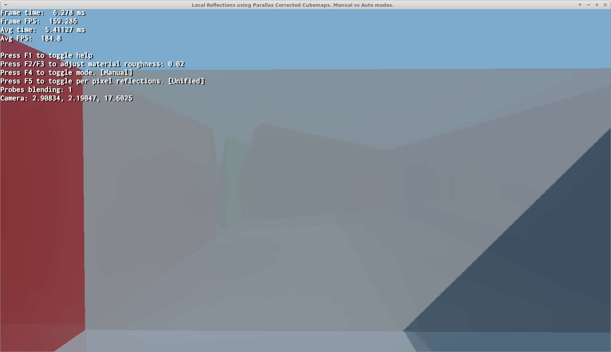
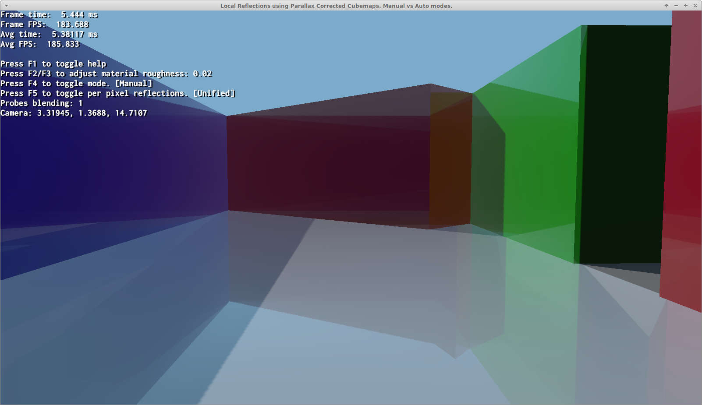
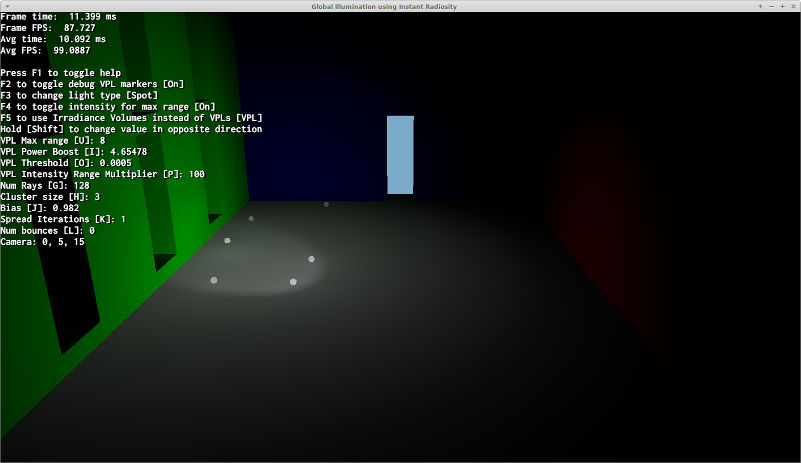
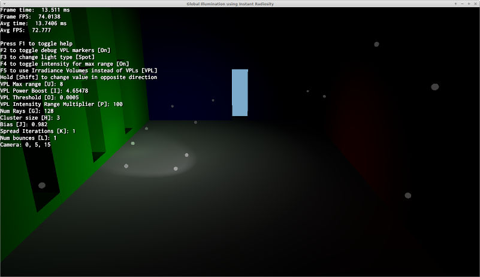
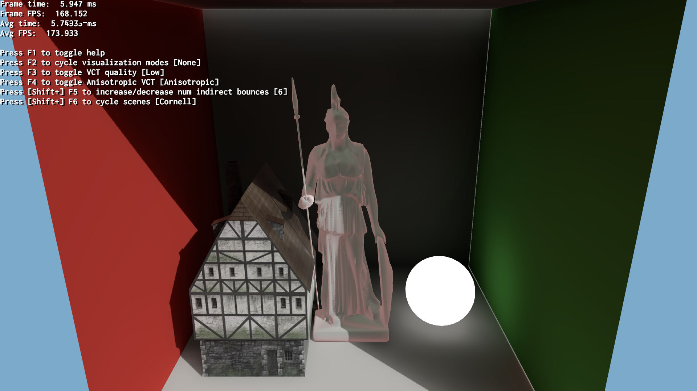
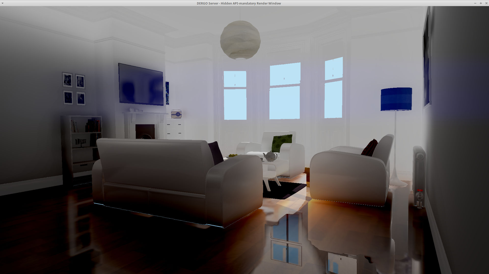

|
OGRE-Next 4.0.0unstable
Object-Oriented Graphics Rendering Engine
|
|
OGRE-Next 4.0.0unstable
Object-Oriented Graphics Rendering Engine
|
Ogre offers various GI techniques and it can be overwhelming which one to choose.
The simplest and fastest solution there is.
It can be:
Use SceneManager::setAmbientLight and set upperHemisphere and lowerHemisphere to the same value or set HlmsPbs::setAmbientLightMode to AmbientFixed.
This is just a solid colour applied uniformly to the entire scene. Very basic
Use SceneManager::setAmbientLight and set upperHemisphere and lowerHemisphere to the different values and set HlmsPbs::setAmbientLightMode to either AmbientAuto*, AmbientHemisphere*, AmbientHemisphereRim, or AmbientHemisphereRimSquared.
Hemisphere lighting is supposed to be set to the colour of the sky or sun in upperHemisphere, and the colour of the ground in lower hemisphere to mimic a single bounce coming from the ground.
Good enough for simple outdoor scenes.
The AmbientHemisphereRim and AmbientHemisphereRimSquared modes are similar to AmbientHemisphereNormal, but use different math that makes it resemble rim lighting. It has got a higher contrast, but can cause dark spots that might be undesirable in HDR. The math prevents the ambient lighting from ever going to colour( 0, 0, 0 )* which is a catastrophic value for HDR (it doesn't signify regular black, but rather black-hole absense of light, causing eye adaptation luminance to go haywire).
However still, the darker spots may or may not be a problem in HDR depending on the scene.
There is no AmbientAutoHemisphereRim or similar, thus these methods must be set manually.
(*) Unless the input ambient colour is already 0.0.
If Spherical Harmonics have been calculated elsewhere, 3rd-order SH coefficients can be provided to SceneManager::setSphericalHarmonics and set HlmsPbs::setAmbientLightMode to either AmbientSh or AmbientShMonochrome.
If AmbientShMonochrome, the red channel of the SH components will be used.
Note: Filament's cmgen tool can generate SH coefficients out of cubemaps
Note: SH lighting is best understood if seen like a single 16x16 cubemap lossy-compressed into 27 floats (if coloured, 9 floats if monochrome)
The oldest technique we have. PCC is mostly for getting good-looking (but often incorrect) specular reflections, but we also use it as a poor-man replacement of diffuse GI by sampling the highest mip.
It consists in generating a cubemap and using simple math to assume the room is reflecting a rectangular room, therefore distortions happen when this assumption is broken e.g. room is round or has a trapezoidal shape, large furniture is placed in the middle of the room, furniture is not thin and glued to the walls, ceiling or floor.
Notice non-rectangular rooms will have incorrect reflections

The reflection of the red wall on the white wall appears to be much bigger and higher than it should

For reference the red wall when viewed directly:

Note: Faking Diffuse GI from PCC can be disabled via envFeatures param in SceneManager::setAmbientLight
Note: To improve diffuse GI lighting quality, you can either use ibl_specular pass to generate mipmaps (see Samples/Media/2.0/scripts/Compositors/Tutorial_DynamicCubemap.compositor or LocalCubemaps.compositor) or you can use Filament's cmgen in combination with our OgreCmgenToCubemap tool
How to use cmgen + OgreCmgenToCubemap:
# Step 1: Launch cmgencmgen -f png -x out --no-mirror panorama_map.hdr# Output data is stored in output/panorama_map/m0*.png to m8*.png# Step 2: Convert the filtered cubemaps to OITD (Ogre internal format):OgreCmgenToCubemap d:\hdri\out\panorama_map png 8 panorama_map.oitdThen load the oitd in Ogre at runtime (You need to explicitly use the prefer-loading-as-sRGB flag) and set it to PBSM_REFLECTION of the datablock.
Cubemaps are blended automatically based on close probes and camera location. Results are usually poor.
- See Samples/2.0/ApiUsage/LocalCubemaps
Each cubemap probe must be set to each HlmsPbsDatablock by hand. This achieves much better results but requires a lot of manual setting.
It is also problematic if two probes should be applied to the same mesh with the same material because that is impossible. The mesh must be split into two with different materials.
- See Samples/2.0/ApiUsage/LocalCubemapsManualProbes
Can run on old Hardware (if using lower quality dual-paraboloid maps) or on modern hardware (if using higher quality cubemap arrays).
Per Pixel PCC is always automatic and combines the results of multiple probes at per pixel granularity. This is extremely convenient because 'it just works' with no further intervention required. It looks as good or better than manual and it's automatic.
But it has a higher performance cost, which is often not a problem for Desktop systems but may be a problem on Mobile.
Requires Forward+ to be enabled.
- See Samples/2.0/ApiUsage/LocalCubemaps
- See Samples/2.0/ApiUsage/LocalCubemapsManualProbes
Strictly speaking this is not a GI technique.
It's merely an automated process to decide the placement of a grid of per pixel PCC probes. Once the probes are set artists can further tweak it.
The main use case is procedurally generated scenes, but can also be useful for artists as a starting point.
- See Samples/2.0/ApiUsage/PccPerPixelGridPlacement
For starters, this technique is a fake. It's not meant to achieve hyper realistic GI, but rather give "good enough" results.
It is based on an old gamedev.net article.
The technique consist in doing raytracing from the light points of view into all directions. And whenever there is a hit place a 'virtual point light' which is literally a basic point that emits light, mimicking a light bounce
Another way to see this technique is that it's just placing an arbitrary amount of point lights until the scene is lit enough from many locations. But instead of the lights being placed by artists, it's done automatically.
- See Samples/2.0/ApiUsage/InstantRadiosity
Instant Radiosity's virtual light points visualized for 0 and 1 bounce (intensity exaggerated)


Irradiance Volume uses a 3D volume to store lighting information. Currently this IV is generated from Instant Radiosity data. But once generated the 3D texture can be saved to disk as is and be loaded directly which should be very fast (only limitation is IO bandwidth)
Each voxel contains lighting information from all 6 directions.
Another way to look at this solution is like a 3D grid of lots of 1x1 cubemaps.
- See Samples/2.0/ApiUsage/InstantRadiosity
VCT is ray marching but instead of rays, cones are used. Hence cone tracing or cone marching.
As of 2021 this technique is state of the art and is very accurate and can even generate specular glossy reflections, although low roughness reflections will not look as good as high roughness reflections.
This technique works by voxelizing the entire scene (i.e. turning the whole scene into a Minecraft-like world representation) and then at runtime cone tracing against this voxel world to gather bounce data.

- See Samples/2.0/Tests/Voxelizer
Ogre supports combining Per-Pixel Parallax Corrected Cubemaps (PCC) with VCT when both techniques are enabled at the same time.
The idea is to use PCC to support much better low roughness (e.g. mirror-like) reflections and when PCC data is not available fallback to VCT.
Details are in our News Announcement.
Parameters pccVctMinDistance and pccVctMaxDistance from HlmsPbs::setParallaxCorrectedCubemap control how PCC and VCT data is combined.

This is a more generic term for what NVIDIA calls Dynamic Diffuse Global Illumination, but instead of generating it out of Raytracing, we generated it from any source of data available (in Ogre's case, from VCT's Voxel data or via Rasterization).
IFD only supports diffuse GI.
As of 2021 this technique is also state of the art and can be very accurate.
This technique is extremely similar to Irradiance Volume before (e.g. can be thought of a 3D grid of 1x1 cubemaps), but it is combined with depth information to fight leaking.
Additionally, instead of 3D textures, a 2D texture is used and octahedral maps are used to store information. The use of 2D textures instead of 3D opens up unexplored possibilities such as streaming 2D data using MPEG video compression, or GPU-friendly compression formats such as BC7 or ASTC.
- See Samples/2.0/Tests/Voxelizer
Image Voxel Cone Tracing is like regular VCT except it bakes every mesh into voxels, and then copies those voxels into the scene.
This makes rebuilding the scene much faster at the cost of higher VRAM usage and slightly lower quality.
By being able to revoxelize scenes very fast we can:
This would make it the best overall GI implementation.
The details are described in Image Voxel Cone Tracing
Cascaded IVCT extends the concept with cascades of varying quality to cover large distances around the camera but at lower resolutions.
Currently CIVCT is in alpha state which means:
Ogre 2.4 will fix most of these issues
- See Samples/2.0/ApiUsage/ImageVoxelizer
PCC is what most games use because it's fast, easy to understand, and has predictable results. If the scene is mostly composed of rectangular rooms with little furniture, PCC will also be extremely accurate.
If all you want is a solution that pretends to have GI regardless of accuracy, Instant Radiosity can be an interesting choice, specially if you already needed to enable Forward+.
Irradiance Volume is also even faster and for small indoor scenes it can get very reasonable results, specially if supporting old HW is needed.
If you want something accurate, pretty and runs reasonably fast with reasonably memory consumption then go for IFD. This one has the best balance of quality, usability and performance.
If you need the best possible quality or require to change lighting at runtime, then VCT (or IFD + VCT) is the best solution.
Please note that many of these techniques can be combined together (e.g. PCC and per-pixel PCC usually can be paired with anything) but they won't necessarily end up in pleasant-looking results, and certain combinations may cause shaders to compile (it could be an Ogre bug so if you find it please report it in the forums or in Github)